Snakes of Venezuela
182 snake species are recorded in Venezuela in SnakeList: 27 venomous and 155 non-venomous, from 8 families.
- 182species
- 27venomous
- 155non-venomous
- 8families
Species
Showing 182 species
 Aesculapian False Coral SnakeErythrolamprus aesculapii
Aesculapian False Coral SnakeErythrolamprus aesculapii Aleman's Snail-eaterPlesiodipsas perijanensis
Aleman's Snail-eaterPlesiodipsas perijanensis- No photo yetAmaral's Tropical RacerMastigodryas amarali
 Amazon Banded SnakeRhinobothryum lentiginosum
Amazon Banded SnakeRhinobothryum lentiginosum Amazon Basin Tree SnakeImantodes lentiferus
Amazon Basin Tree SnakeImantodes lentiferus Amazon Coastal House SnakeThamnodynastes pallidus
Amazon Coastal House SnakeThamnodynastes pallidus Amazon Coral SnakeMicrurus spixii
Amazon Coral SnakeMicrurus spixii Amazon False Fer-de-lanceXenodon severus
Amazon False Fer-de-lanceXenodon severus Amazon Tree BoaCorallus hortulana
Amazon Tree BoaCorallus hortulana Amazon Tropical Forest SnakeErythrolamprus pygmaeus
Amazon Tropical Forest SnakeErythrolamprus pygmaeus Amazon Water SnakeHydrops martii
Amazon Water SnakeHydrops martii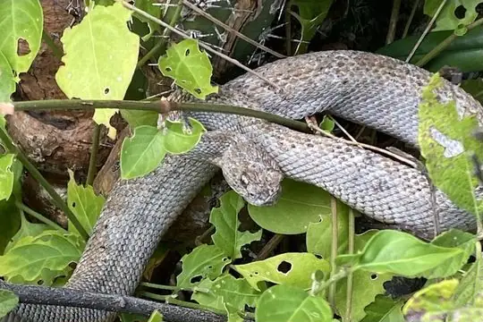
Aruba Island RattlesnakeCrotalus unicolor Ashmead's Banded Cat-eyed SnakeLeptodeira ashmeadii
Ashmead's Banded Cat-eyed SnakeLeptodeira ashmeadii Baker's Cat-eyed SnakeLeptodeira bakeri
Baker's Cat-eyed SnakeLeptodeira bakeri Banded Cat-eyed Snake (annulata)Leptodeira annulata
Banded Cat-eyed Snake (annulata)Leptodeira annulata Bibron's False Coral SnakeOxyrhopus doliatus
Bibron's False Coral SnakeOxyrhopus doliatus Big Ground SnakeAtractus major
Big Ground SnakeAtractus major Big-scaled Blind SnakeTrilepida macrolepis
Big-scaled Blind SnakeTrilepida macrolepis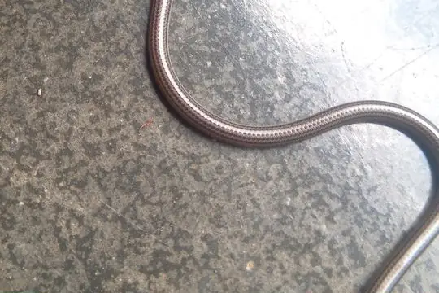
Black Blind Snake (fallax)Epictia fallax Black MilksnakeLampropeltis micropholis
Black MilksnakeLampropeltis micropholis Boa ConstrictorBoa constrictor
Boa ConstrictorBoa constrictor Boddaert's Tropical RacerMastigodryas boddaerti
Boddaert's Tropical RacerMastigodryas boddaerti Brongersma's Worm SnakeAmerotyphlops brongersmianus
Brongersma's Worm SnakeAmerotyphlops brongersmianus Brown Rainbow BoaEpicrates maurus
Brown Rainbow BoaEpicrates maurus Brown SipoChironius fuscus
Brown SipoChironius fuscus Brown VinesnakeOxybelis aeneus
Brown VinesnakeOxybelis aeneus BushmasterLachesis muta
BushmasterLachesis muta Capuchin coral snakeMicrurus dumerilii
Capuchin coral snakeMicrurus dumerilii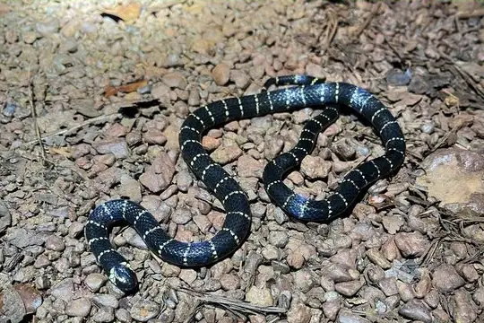
Carib Coral SnakeMicrurus psyches Cascabel RattlesnakeCrotalus durissus
Cascabel RattlesnakeCrotalus durissus Catesby's Snail-eaterDipsas catesbyi
Catesby's Snail-eaterDipsas catesbyi Central American Indigo SnakeDrymarchon melanurus
Central American Indigo SnakeDrymarchon melanurus Coal SnakePseudoboa neuwiedii
Coal SnakePseudoboa neuwiedii Common Green RacerChlorosoma viridissimum
Common Green RacerChlorosoma viridissimum Cope's Snail-eaterDipsas copei
Cope's Snail-eaterDipsas copei Cope's Tropical RacerMastigodryas pulchriceps
Cope's Tropical RacerMastigodryas pulchriceps Copper Parrot SnakeLeptophis cupreus
Copper Parrot SnakeLeptophis cupreus Coral Cylinder SnakesAnilius scytale
Coral Cylinder SnakesAnilius scytale Crowned False BoaPseudoboa coronata
Crowned False BoaPseudoboa coronata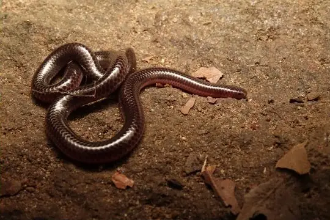
Dainty Blind SnakeTrilepida dimidiata Degenhardt's Scorpion-eating SnakeStenorrhina degenhardtii
Degenhardt's Scorpion-eating SnakeStenorrhina degenhardtii Diurnal Vine SnakeXenoxybelis argenteus
Diurnal Vine SnakeXenoxybelis argenteus DormilonaCorallus ruschenbergerii
DormilonaCorallus ruschenbergerii Emerald Tree BoaCorallus caninus
Emerald Tree BoaCorallus caninus- No photo yetEmigdio's Ground SnakeAtractus emigdioi
- No photo yetEstado Falcón Worm SnakeAmerotyphlops lehneri
 Falcon indigo snakeDrymarchon caudomaculatus
Falcon indigo snakeDrymarchon caudomaculatus False Coral SnakeErythrolamprus pseudocorallus
False Coral SnakeErythrolamprus pseudocorallus Fer-de-lanceBothrops asper
Fer-de-lanceBothrops asper Fer-de-LanceBothrops atrox
Fer-de-LanceBothrops atrox Fiddle-string SnakeImantodes cenchoa
Fiddle-string SnakeImantodes cenchoa Goudot's Black Blind SnakeEpictia goudotii
Goudot's Black Blind SnakeEpictia goudotii Green AnacondaEunectes murinus
Green AnacondaEunectes murinus Green JararacaBothrops bilineatus
Green JararacaBothrops bilineatus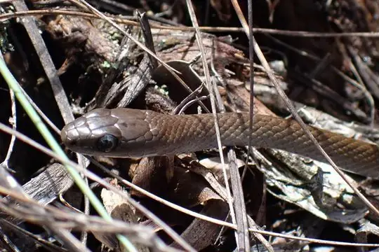
Guaiquinima Bush RacerPhilodryas cordata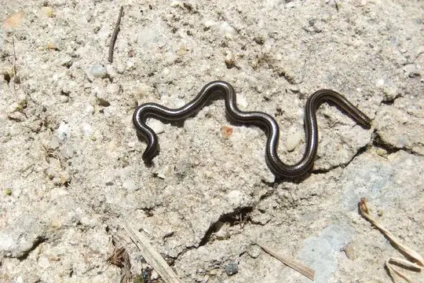
Guyana Blind SnakeEpictia tenella Hagmann's KeelbackHelicops hagmanni
Hagmann's KeelbackHelicops hagmanni Hallowell's Coffee SnakeNinia atrata
Hallowell's Coffee SnakeNinia atrata Hallowell's Ground SnakeAtractus fuliginosus
Hallowell's Ground SnakeAtractus fuliginosus Hemprich's Coral SnakeMicrurus hemprichii
Hemprich's Coral SnakeMicrurus hemprichii Herrmann's Water SnakeHydrodynastes bicinctus
Herrmann's Water SnakeHydrodynastes bicinctus Impostor Flame-SnakeOxyrhopus vanidicus
Impostor Flame-SnakeOxyrhopus vanidicus Indigo SnakeDrymarchon corais
Indigo SnakeDrymarchon corais Ladder KeelbackHelicops scalaris
Ladder KeelbackHelicops scalaris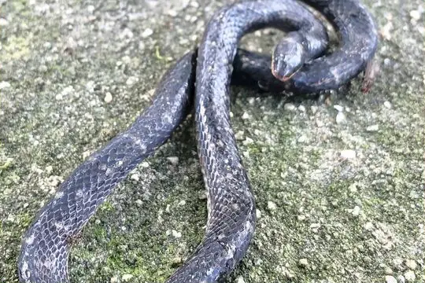
Lancini's Ground SnakeAtractus lancinii Lichtenstein's Green RacerPhilodryas olfersii
Lichtenstein's Green RacerPhilodryas olfersii Lined Ground SnakeLygophis lineatus
Lined Ground SnakeLygophis lineatus- No photo yetMargarita Indigo SnakeDrymarchon margaritae
 Maringma Tepui SipoChironius challenger
Maringma Tepui SipoChironius challenger- No photo yetMarisela's Ground SnakeAtractus mariselae
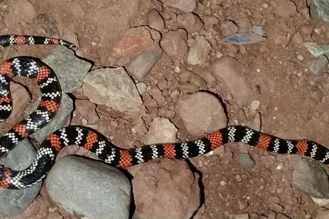
Merida Coral SnakeMicrurus meridensis- No photo yetMertens' Tropical Forest SnakeErythrolamprus mertensi
 Military Ground SnakeErythrolamprus miliaris
Military Ground SnakeErythrolamprus miliaris Mountain KeelbackHelicops angulatus
Mountain KeelbackHelicops angulatus Mountain SipoChironius monticola
Mountain SipoChironius monticola Natterer's Coral SnakeMicrurus nattereri
Natterer's Coral SnakeMicrurus nattereri- No photo yetNeblina coralsnakeMicrurus remotus
 Neckband Ground SnakeAtractus torquatus
Neckband Ground SnakeAtractus torquatus Neotropical Snail-eater (indica)Dipsas indica
Neotropical Snail-eater (indica)Dipsas indica Neotropical Whip SnakeMasticophis mentovarius
Neotropical Whip SnakeMasticophis mentovarius- No photo yetNortheastern Puffing SnakePhrynonax polylepis
 Northern Calico SnakeOxyrhopus occipitalis
Northern Calico SnakeOxyrhopus occipitalis Northern Snail-eaterDipsas pavonina
Northern Snail-eaterDipsas pavonina Northern Woodland RacerDrymoluber dichrous
Northern Woodland RacerDrymoluber dichrous Olive Forest RacerDendrophidion dendrophis
Olive Forest RacerDendrophidion dendrophis Oliver's Parrot Snake (coeruleodorsus)Leptophis coeruleodorsus
Oliver's Parrot Snake (coeruleodorsus)Leptophis coeruleodorsus- No photo yetPacaraima coral snakeMicrurus pacaraimae
 Pacific Longtail SnakeEnulius flavitorques
Pacific Longtail SnakeEnulius flavitorques Pamplona Ground SnakeAtractus pamplonensis
Pamplona Ground SnakeAtractus pamplonensis Panama Spotted Night SnakeSiphlophis cervinus
Panama Spotted Night SnakeSiphlophis cervinus Parrot SnakeLeptophis ahaetulla
Parrot SnakeLeptophis ahaetulla Peru Snail-eaterDipsas peruana
Peru Snail-eaterDipsas peruana Peters' Forest RacerDendrophidion nuchale
Peters' Forest RacerDendrophidion nuchale Plee's Tropical RacerMastigodryas pleii
Plee's Tropical RacerMastigodryas pleii Pratt's Snail-eaterDipsas pratti
Pratt's Snail-eaterDipsas pratti Pygmy Coral SnakeMicrurus dissoleucus
Pygmy Coral SnakeMicrurus dissoleucus Rainbow BoaEpicrates cenchria
Rainbow BoaEpicrates cenchria Red-black Ground SnakeAtractus erythromelas
Red-black Ground SnakeAtractus erythromelas Red-headed GlasstailUrotheca fulviceps
Red-headed GlasstailUrotheca fulviceps Redtail Coral SnakeMicrurus mipartitus
Redtail Coral SnakeMicrurus mipartitus Reticulate Worm SnakeAmerotyphlops reticulatus
Reticulate Worm SnakeAmerotyphlops reticulatus Ringed Centipede SnakeTantilla semicincta
Ringed Centipede SnakeTantilla semicincta Rio Tropical RacerPalusophis bifossatus
Rio Tropical RacerPalusophis bifossatus- No photo yetRivero's Ground SnakeAtractus riveroi
 Royal Ground SnakeErythrolamprus reginae
Royal Ground SnakeErythrolamprus reginae- No photo yetRoze's Coastal House SnakeThamnodynastes chimanta
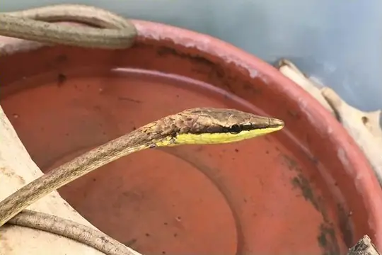
Rutherford's Brown Vine SnakeOxybelis rutherfordi Savannah RacerErythrolamprus aenigma
Savannah RacerErythrolamprus aenigma Seven-striped Blind SnakeSiagonodon septemstriatus
Seven-striped Blind SnakeSiagonodon septemstriatus Shaw's Dark Ground SnakeErythrolamprus melanotus
Shaw's Dark Ground SnakeErythrolamprus melanotus Shreve's KeelbackHelicops pastazae
Shreve's KeelbackHelicops pastazae Shropshire's Puffing SnakePhrynonax shropshirei
Shropshire's Puffing SnakePhrynonax shropshirei Sipo (carinatus)Chironius carinatus
Sipo (carinatus)Chironius carinatus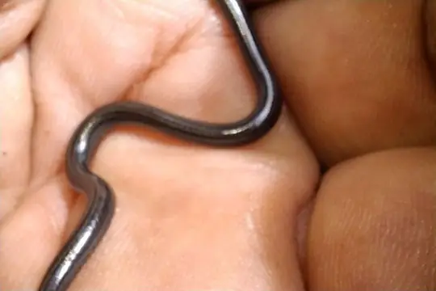
South American Blind Snake (amazonica)Epictia amazonica- No photo yetSouth American Blind Snake (signata)Epictia signata
 South American Coral SnakeMicrurus lemniscatus
South American Coral SnakeMicrurus lemniscatus South American Forest RacerDendrophidion percarinatum
South American Forest RacerDendrophidion percarinatum South American Pond Snake (plicatilis)Pseudoeryx plicatilis
South American Pond Snake (plicatilis)Pseudoeryx plicatilis- No photo yetSouth American Pond Snake (relictualis)Pseudoeryx relictualis
 South American Sipo (multiventris)Chironius multiventris
South American Sipo (multiventris)Chironius multiventris South American Sipo (septentrionalis)Chironius septentrionalis
South American Sipo (septentrionalis)Chironius septentrionalis Speckled Forest Pit ViperBothrops taeniatus
Speckled Forest Pit ViperBothrops taeniatus- No photo yetSpeckled Ground SnakeAtractus ventrimaculatus
 Spix's SipoChironius spixii
Spix's SipoChironius spixii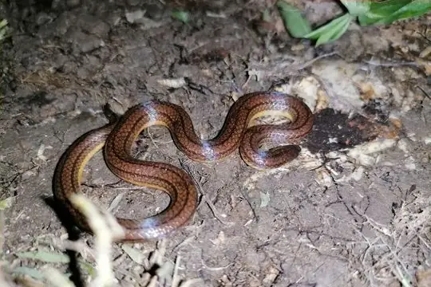
Three-lined Ground SnakeAtractus trilineatus Triangle Water SnakeHydrops triangularis
Triangle Water SnakeHydrops triangularis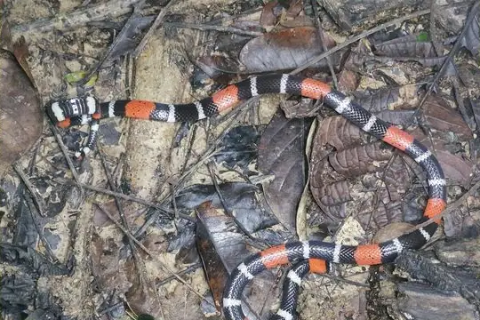
Trinidad coralsnakeMicrurus diutius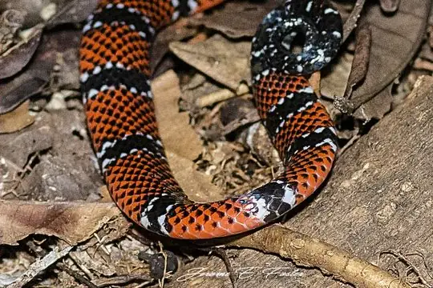
Trinidad Northern Coral SnakeMicrurus circinalis Trinidad Snail-eaterDipsas trinitatis
Trinidad Snail-eaterDipsas trinitatis Tropical Flat SnakeSiphlophis compressus
Tropical Flat SnakeSiphlophis compressus Troschel's Pampas SnakePhimophis guianensis
Troschel's Pampas SnakePhimophis guianensis Tucuman ThreadsnakeEpictia albipuncta
Tucuman ThreadsnakeEpictia albipuncta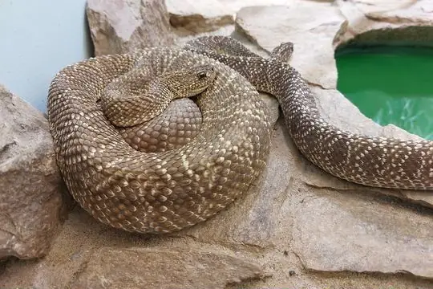
Uracoan RattlesnakeCrotalus vegrandis Variegated Snail-eaterDipsas variegata
Variegated Snail-eaterDipsas variegata Velvet SwampsnakeErythrolamprus typhlus
Velvet SwampsnakeErythrolamprus typhlus- No photo yetVelvety Swamp SnakeErythrolamprus torrenicola
- No photo yetVenezuela Blind SnakeTrilepida affinis
 Venezuela Coral SnakeMicrurus isozonus
Venezuela Coral SnakeMicrurus isozonus- No photo yetVenezuela Forest Pit ViperBothrops medusa
- No photo yetVenezuela Ground SnakeAtractus duidensis
 Venezuela LanceheadBothrops venezuelensis
Venezuela LanceheadBothrops venezuelensis Venezuela Snail-eaterDipsas latifrontalis
Venezuela Snail-eaterDipsas latifrontalis- No photo yetVenezuelan Snail-eaterDipsas praeornata
 Wagler's SnakeXenodon merremii
Wagler's SnakeXenodon merremii Werner's False Coral SnakeOxyrhopus leucomelas
Werner's False Coral SnakeOxyrhopus leucomelas- No photo yetWilliams' Ground SnakeErythrolamprus williamsi
 Yellow-bellied SnakeErythrolamprus poecilogyrus
Yellow-bellied SnakeErythrolamprus poecilogyrus- No photo yetYellowtail Blind SnakeHelminthophis flavoterminatus
 Zweifel's Ground SnakeErythrolamprus zweifeli
Zweifel's Ground SnakeErythrolamprus zweifeli- No photo yetAtractus acheronius
- No photo yetAtractus ayeush
- No photo yetAtractus heyeri
- No photo yetAtractus insipidus
- No photo yetAtractus matthewi
- No photo yetAtractus meridensis
- No photo yetAtractus micheleae
- No photo yetAtractus mijaresi
- No photo yetAtractus multidentatus
- No photo yetAtractus ochrosetrus
- No photo yetAtractus steyermarki
- No photo yetAtractus tamaensis
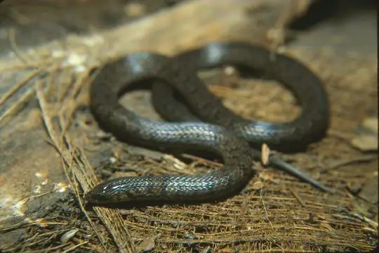
Atractus tamessari- No photo yetAtractus taphorni
- No photo yetAtractus turikensis
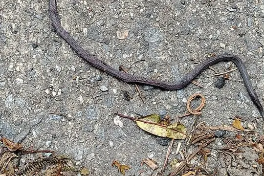
Atractus vittatus- No photo yetColuber alternans
- No photo yetEpictia hobartsmithi
 Erythrolamprus dorsocorallinus
Erythrolamprus dorsocorallinus- No photo yetErythrolamprus epinephelus
- No photo yetErythrolamprus ingeri
 Erythrolamprus oligolepis
Erythrolamprus oligolepis- No photo yetErythrolamprus trebbaui
- No photo yetTaeniophallus nebularis
- No photo yetThamnodynastes ceibae
- No photo yetThamnodynastes corocoroensis
- No photo yetThamnodynastes dixoni
- No photo yetThamnodynastes duida
- No photo yetThamnodynastes marahuaquensis
- No photo yetThamnodynastes paraguanae
- No photo yetThamnodynastes ramonriveroi
- No photo yetThamnodynastes yavi
 Urotheca multilineata
Urotheca multilineata
No snakes in Venezuela match.
Venezuela’s snakes in numbers
- Families: Colubridae 135, Elapidae 14, Leptotyphlopidae 11, Viperidae 10, Boidae 7, Typhlopidae 3, Aniliidae 1, Anomalepididae 1.
- 39 are recorded in no other country in SnakeList: Amaral's Tropical Racer, Black Blind Snake (fallax), Emigdio's Ground Snake, Estado Falcón Worm Snake, Guaiquinima Bush Racer, Lancini's Ground Snake, Margarita Indigo Snake, Marisela's Ground Snake, Merida Coral Snake, Mertens' Tropical Forest Snake, Roze's Coastal House Snake, Rutherford's Brown Vine Snake and 27 more.